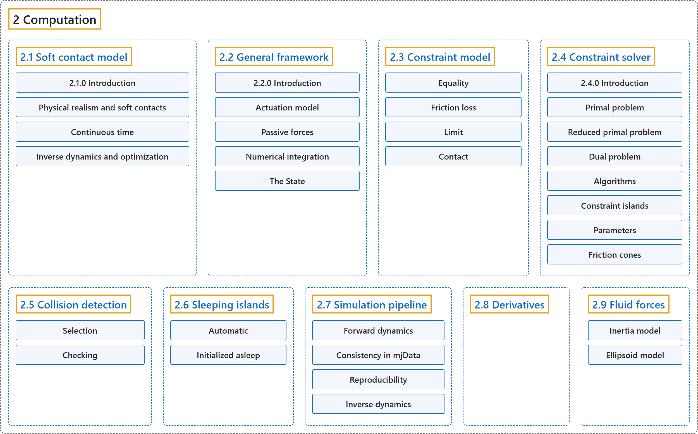

2. Computation
Classification

Glossary
| Term | Definition | 中文翻译 | Source |
|---|---|---|---|
| 2 Computation 计算 |
"This chapter describes the mathematical and algorithmic foundations of MuJoCo." | 本章介绍 MuJoCo 的数学和算法基础。 | Google DeepMind, n.d.-a, "Introduction", para. 1 |
| 2.1 Soft contact model 软接触模型 |
(No definition) | （无定义） | Google DeepMind, n.d.-a, "Soft contact model" |
| 2.2 General framework 一般框架 |
(No definition) | （无定义） | Google DeepMind, n.d.-a, "General framework" |
| 2.3 Constraint model 约束模型 |
(context) "MuJoCo has a very flexible constraint model, which is nevertheless handled in a uniform way by the solver described later." | （语境）MuJoCo 有一个非常灵活的约束模型，但它由后面介绍的求解器统一处理。 | Google DeepMind, n.d.-a, "Constraint model", para. 1 |
| 2.4 Constraint solver 约束求解器 |
(context) "First, the constraint forces are defined as the unique global solution to a convex optimization problem." | （语境）首先，约束力被定义为一个凸优化问题的唯一全局解。 | Google DeepMind, n.d.-a, "Constraint solver", para. 1 |
| 2.5 Collision detection 碰撞检测 |
(context) "Collision detection operates on geoms, which are geometric entities rigidly attached to the underlying bodies." | （语境）碰撞检测作用于 geom，即刚性附着在底层刚体上的几何实体。 | Google DeepMind, n.d.-a, "Collision detection", para. 1 |
| 2.6 Sleeping islands 休眠岛 |
(context) "Sleeping is a performance optimization whereby movable elements of the simulation that are detected to be stationary are temporarily removed from the pipeline (“put to sleep”)." | （语境）休眠是一种性能优化：检测到静止不动的可动仿真元素会被暂时移出计算流水线（“使其休眠”）。 | Google DeepMind, n.d.-a, "Sleeping islands", para. 1 |
| 2.7 Simulation pipeline 仿真流水线 |
(context) "Here we summarize the sequence of computations involved in forward and inverse dynamics respectively." | （语境）这里分别概述正向动力学和逆向动力学所涉及的计算顺序。 | Google DeepMind, n.d.-a, "Simulation pipeline", para. 1 |
| 2.8 Derivatives 导数 |
(context) "MuJoCo’s entire computational pipeline including its constraint solver are analytically differentiable in principle." | （语境）MuJoCo 的整个计算流水线（包括约束求解器）在原理上都是可解析求导的。 | Google DeepMind, n.d.-a, "Derivatives", para. 1 |
| 2.9 Fluid forces 流体力 |
(context) "Nevertheless we provide two phenomenological models which are sufficient for simulating behaviors such as flying and swimming." | （语境）不过我们提供了两种唯象模型，足以模拟飞行和游泳等行为。 | Google DeepMind, n.d.-b, "Fluid forces", para. 1 |
References
Google DeepMind. (n.d.-a). Computation. MuJoCo Documentation (Version 3.17.0). Retrieved October 31, 2026, from https://mujoco.readthedocs.io/en/stable/computation/index.html
Google DeepMind. (n.d.-b). Fluid forces. MuJoCo Documentation (Version 3.17.0). Retrieved October 31, 2026, from https://mujoco.readthedocs.io/en/stable/computation/fluid.html